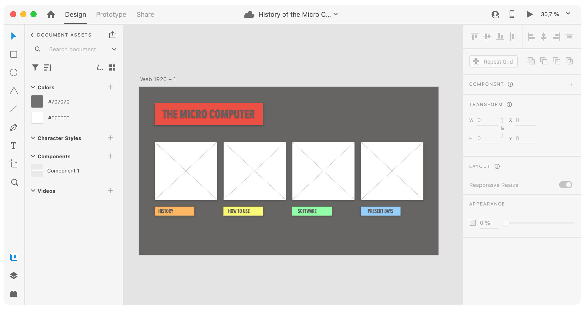

History of the Micro Computer


The challenge for this assigment was to make a landing page with links to other webpages. I started visualizing the project with Adobe XD, which I used to make frameworks, the “skeleton” of a webpage. I then got a hold on CSS grids to make a nice looking .index page while keeping the design as minimal as possible, again relying on Gestalt Laws such as figure ground and symmetry.
